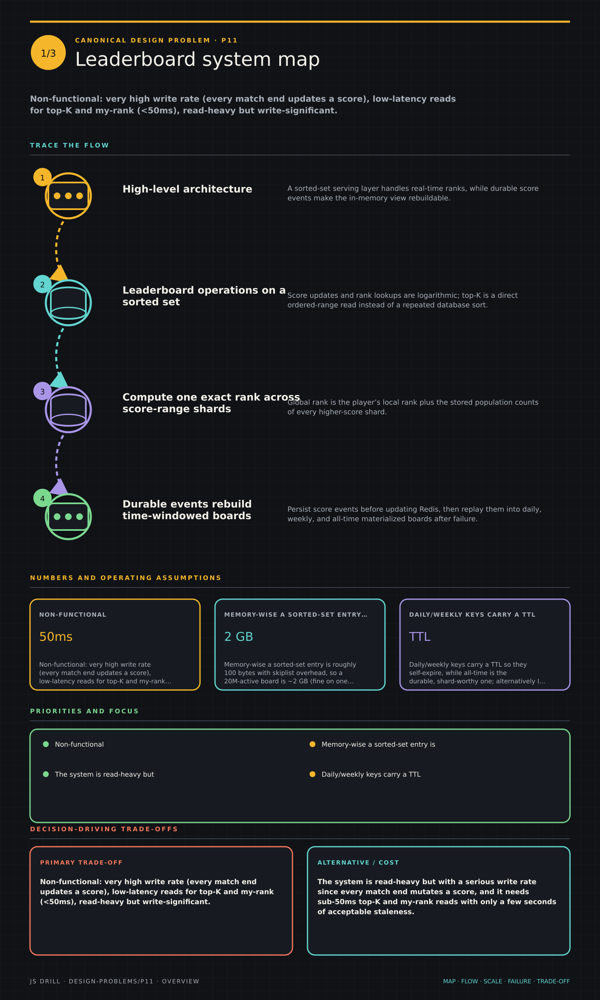

https://frosty110.github.io/js-drill/assets/system-design/infographics/design-problems/p11/overview.pngA real-time ranking board for a game or app: players submit scores and read the top-K plus their own rank, updated live. The signature challenge is maintaining rank ordering under a high write rate — a Redis sorted set makes score updates and top-K reads O(log N), while cheaply answering a specific user's exact rank at scale is the genuinely hard part.
All questions, model answers and diagrams for Design a Leaderboard →